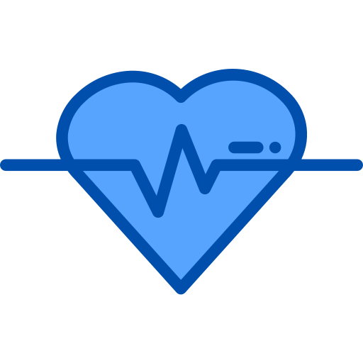

Layanan Kami
----------------------
Kami memberikan layanan yang terbaik untuk para bunda.

USG 2D (Dua Dimensi)
Pemeriksaan ini dapat dilakukan di sepanjang masa kehamilan. Alat probe USG diletakkan di perut ibu. Dapat di lakukan saat usia kehamilan 6 minggu, hingga sebelum persalinan.
Selengkapnya...
USG 3D/4D
Pemeriksaan USG 3D dan 4D sebenarnya hampir sama, yaitu untuk menampilkan gambaran 3 dimensi untuk mengonfirmasi hasil pemeriksaan USG 2D dengan visualisasi yang lebih jelas.
Selengkapnya...
USG transvaginal
Pemeriksaan USG melalui vagina. Pada pemeriksaan ini stik probe USG dimasukkan ke dalam vagina untuk menilai dengan lebih detail dan detail organ rahim, indung telur dan sel telur (folikel).
Selengkapnya...
Lepas IUD
Prosedur melepas IUD baik IUD dengan benang atau IUD tanpa benang.
Pasang IUD
IUD adalah singkatan dari intrauterine device atau bisa juga disebut sebagai KB spiral. Alat kontrasepsi berbahan plastik ini memiliki bentuk seperti huruf “T” dan dipasang di dalam.
Selengkapnya...
USG Fetomaternal
Jenis pemeriksaan ultrasonografi yang dilakukan oleh dokter kandungan fetomaternal. USG ini bisa menggunakan probe vaginal maupun USG 2D, juga pemeriksaan 3D/4D sesuai indikasi. USG ini menilai dengan lebih detail kondisi janin dan memastikan untuk mendeteksi segala kelainan pada janin. USG fetomaternal sangat disarankan pada:
Selengkapnya...